Until the Quiet Comes /
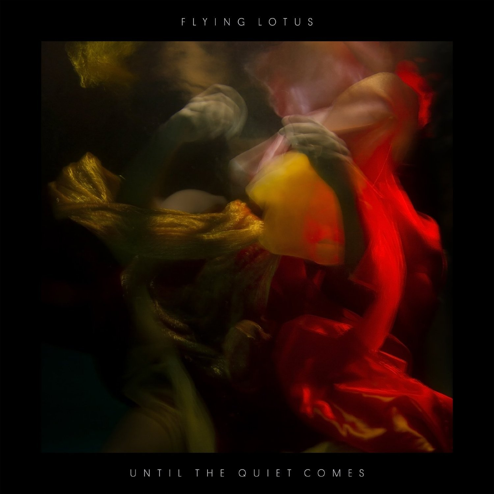
Flying Lotus (Steve Eillison), Born October 7th, 1983 is a record producer, filmaker, experimental musician, and rapper from Los Angeles, California.
Flying Lotus (2014)
Flying Lotus (2019)
As the great-nephew of jazz pianist Alice Coltrane (John Coltranes wife) and the grandson of Mo-Town singer Marilyn Mcleod, music was in his blood.
Flying Lotus and his Grandma, Marilyn Mcleod
 John and Alice Coltrane
John and Alice Coltrane
On his 15th birthday his cousin gave him a Roland MC-505 Groovebox and a friend of his lent him a copy of a R.A.W Mixtape from the L.A. drum & bass scene. From there his musical landscape changed and his inner beatmaker began to flourish.
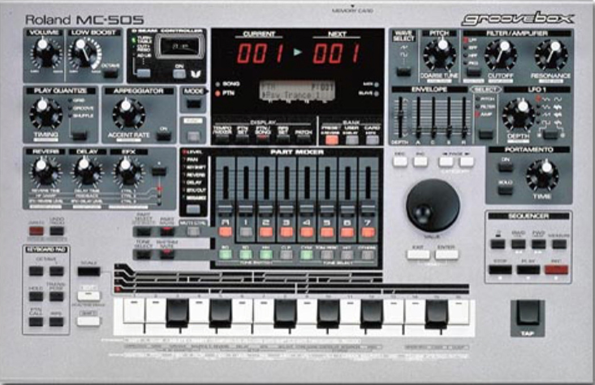
Roland MC-505
LAmixtapes R.A.W - DISTORTED DREAMS MIX
While attending film school in L.A. his experimentation with music began to take shape and produce genuine songs. One night while sitting on his mothers couch watching television he saw an ad on Cartoon Network’s Adult Swim asking for song submissions. After doubting himself his mother convinced him to send in some of his music. His music was accepted and soon his beats were all over the channel.
1983
In the early to mid 2000s his music was still a very personal affair where its creation mostly took place in his bedroom until he started frequenting the club, Little Temple where he met other experimental music producers. “We’d hang out, and every week we’d all have some new shit. It was like homework for us.”
Flying Lotus at Little Temple
Flying Lotus' home studio
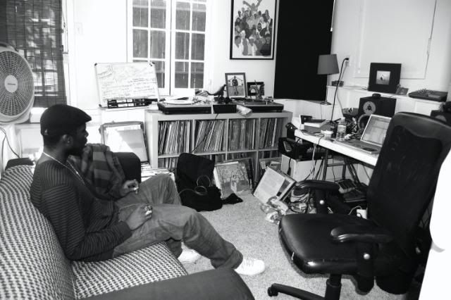
During this time he was also interning at at the pioneering hip hop label Stones Throw Records, home to legends like Madlib, J Dilla and MF Doom. He spent his days at the office and his nights at his grandmothers home, which was filled with synthesizers and drum machines, making what would be his debut album 1983.
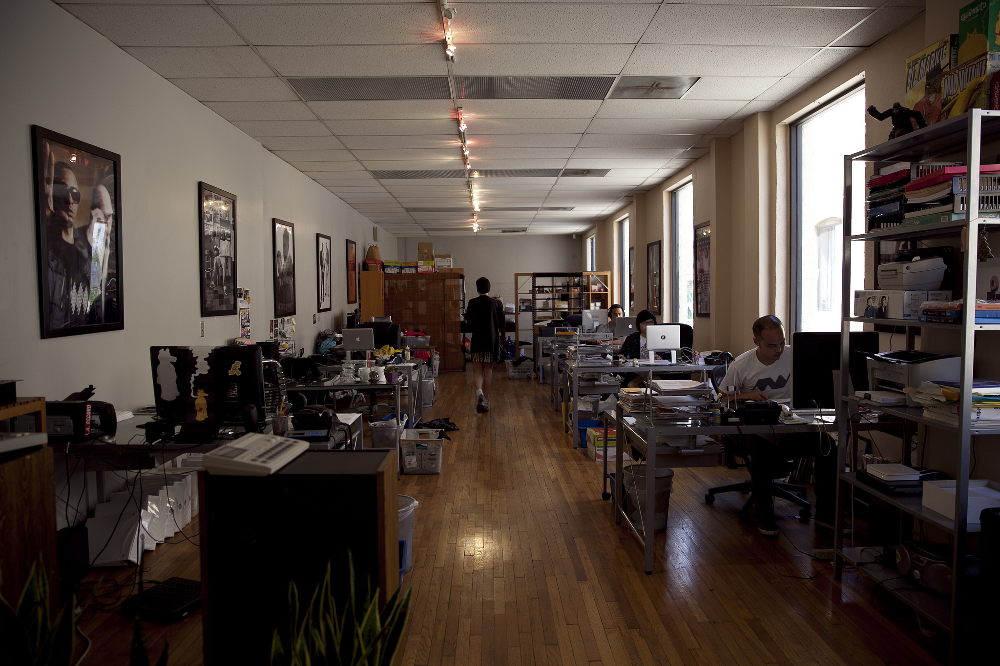
Stones Throw Records
The album was released on indie label Plug Research. Filled with off kilter drums and over compressed spacey, eastern sounding hip hop beats that sampled 70s Japanese proto-synthpop and 60s jazz harp, he began carving his lane in what would soon be known as the L.A. Beat Scene.
Flying Lotus - 1983
LOS ANGELES
In 2007, he signed to Warp Records home to acts like Prefuse 73, Nightmares on Wax, Boards of Canada, and Autechre. His regular appearances at Little Temple had been replaced by the immeasurably influential Low End Theory club which became an incubator for the L.A. Beat Scene and a generation of talented producers.
Flying Lotus at Low End
Warp Records
As he began to gain notoriety in the scene he decided to commandeer the limelight by launching his own record label, Brainfeeder to unite a large section of the L.A. Beat Scene under one outfit. He quickly signed his roommates Teebs and Samiyam along with other notable figures like Gaslamp Killer, Daedelus, and the late Ras G.
Flying Lotus and Teebs
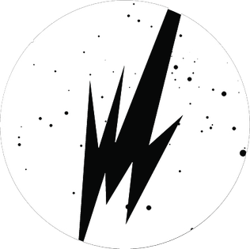
Brainfeeder logo
Months later, he dropped the first huge statement of a very loud career; the aptly titled Los Angeles, his second studio album and first for Warp. The album captured the abundant styles of his city in 17 neat tracks that looked back to golden era hip-hop while introducing recalibrated shards of bass, techno, soul, and samples of his own Aunt’s harp playing. It both tipped a hat to the legacy of J Dilla and made a big statement for the new LA generation.
Flying Lotus - Los Angeles
COSMOGRAMMA
In 2008 he entered a stage of hyper-productivity, as he followed up the Los Angeles record with collaborative tracks with Samiyam and Gonjasufi, a limited white label run of remixes called Shhh!, and a series of LA-inspired EPs. The third in that series (titled L.A. EP 3 X 3), marked a new atmospheric style in his sound.
Flying Lotus - L.A. 2x3 Album Art
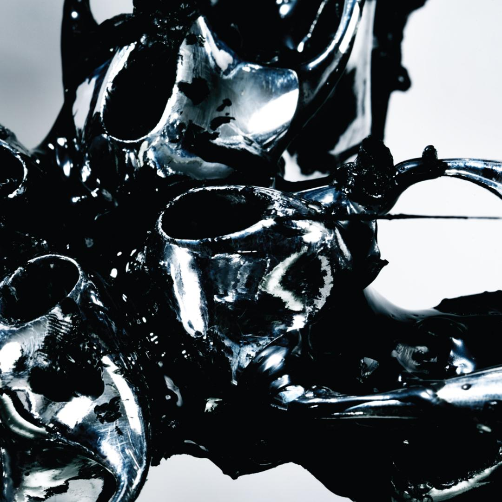
Flying Lotus - L.A. 1x3 Album Art
Flying Lotus - L.A. 3x3 Album Art
He was also working on his third studio album, but this one would take him over 18 months to complete, as the unexpected death of his mother set in motion a period that would change his life completely. Titled Cosmogramma, it became a completely different record: ghosts of grief were grafted into his machines. The recorded bleeps of his mother’s life support, along with grandiose live instrumentation and live vocalists all helped communicate the spiritual musical lineage of his family. This album pushed past his label as a beat maker and established his own sound.
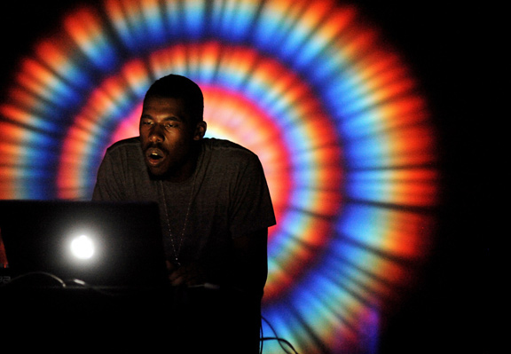
Flying Lotus Live at Echoplex
Flying Lotus - Cosmogramma
The multi-award-winning Cosmogramma released in 2010 was a hard-hitting afrofuturistic shrine to soul, hip-hop, jazz, and IDM but, with more emphasis on a lyrical message than ever before, it was also a cathartic grieving experience. The release gilded him as a global electronic star, although it famously and inexplicably didn’t earn him a Grammy nomination.
UNTIL THE
QUIET COMES
QUIET COMES
In 2012 he released his fourth studio album Until the Quiet Comes. With this album he again reinvents his sound and experiments heavily in the audio engineering process while collaborating with legends like Erykah Badu, Thom Yorke and Johnny Greenwood of Radiohead, Niki Randa, Laura Darlington, and Thundercat.
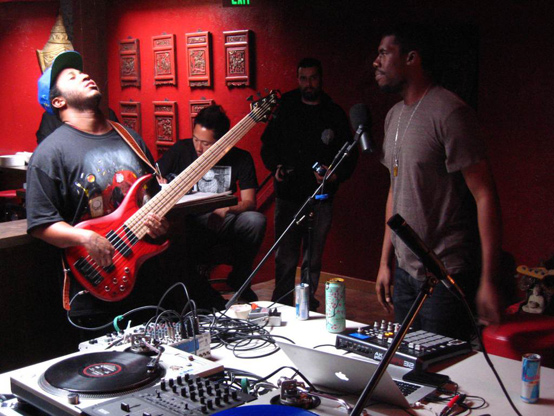
Flying Lotus and Thundercat
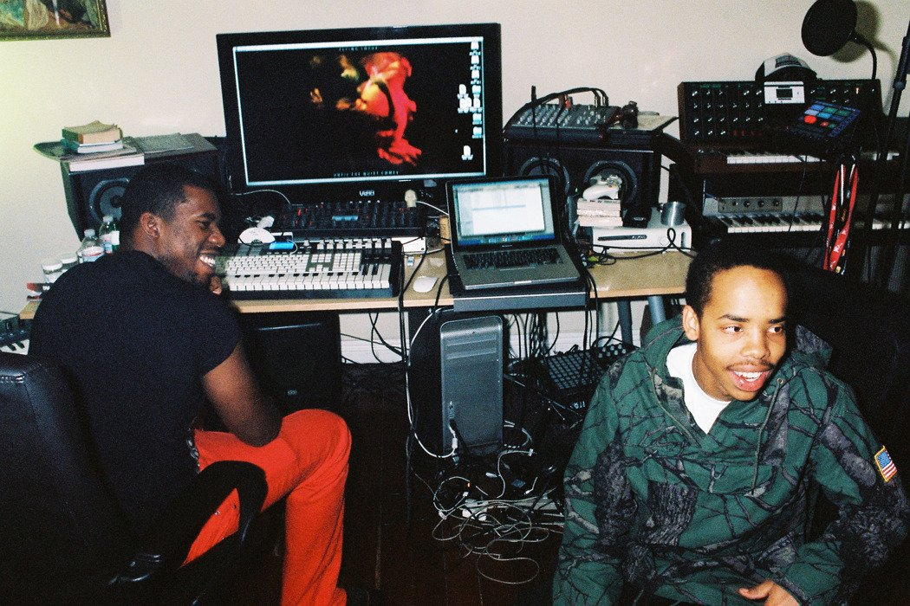
Flying Lotus and Earl Sweatshirt
The album features free jazz elements, varying musical tones, contrasting scales, and shifts in rhythmic feel. Its songs are sequenced together and characterized by what music journalists noted to be ghostly vocal production, irregular drum beats, pulsating percussive textures, trembling basslines, trilled synthesizers, and fluctuating samples. The album has a journey-like concept and dreamy musical narrative, which he conceived while imagining himself in the process of astral projection. He later said the album could be interpreted uniquely by listeners; it has been interpreted by writers as a musical accompaniment to dreams and a process of emotional introspection by the producer.
Flying Lotus - Until the Quiet Comes
In addition to the dream state inducing record, he embarked on a tour with a first of its kind live visual set up. Pairing with Strangeloop Studios they developed an accompanying visual performance that created the illusion of 3D projections, aptly named Layer 3. Using two transparent projection screens, the front one receiving frontal projections and the rear receiving rear projections Ellison was able to perform in-between the two without creating shadows while giving the illusion of three dimensional visuals.
Flying Lotus Live in China with Layer 3
YOU'RE DEAD!
In 2014 he finds himself in a new home filled with new inspiration. After being crowned by tastemaking BBC DJ Mary Anne Hobbs as the “electronic Jimi Hendrix” he understood his role as “one of those people that disrupts the flavor a little bit”. Having an almost near-continuous run of deaths in his life ranging from his parents to fellow musicians and friends he utilized these experiences to create his 5th studio album titled You’re Dead!
Flying Lotus' new home
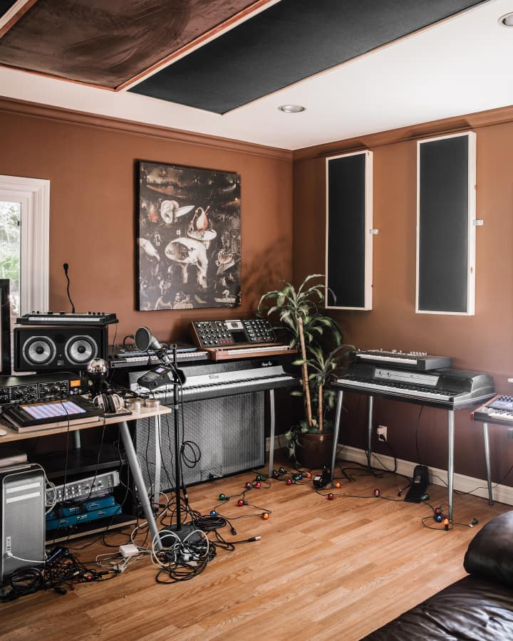
Flying Lotus' home studio
Flying Lotus-You're Dead!
The album was originally conceived as a double album with himself and frequent collaborator and best friend Thundercat as a crack jazz duo playing “30 jazz breaks, a minute each”. After Thundercat went on the road touring for his 2013 album release Flying lotus continued working on the album alone. The album blurs across 19 tracks in roughly 40 minutes, moving from chaos and disarray to a more subdued sense of space by the middle of the album. This transition is meant to emulate the voyage of the spirit after death itself. This album paved a new space for Flying Lotus as it sounds more akin to jazz fusion than his more hip hop centered albums in the past. The album features collaborations with Kendrick Lamar, Snoop Dogg, Herbie Hancock, Nicki Randa, Miguel Atwood-Ferguson, Angel Deardoorian and Thundercat.
With this album his live tour visuals also received a new look. Working with the same team at Strangeloop Studios and Teaching Machine they upgraded the Layer3 setup to now feature a tesseract for the front projection screen giving the illusion of a three dimensional cube. The new set up was rightfully title Hypercube.
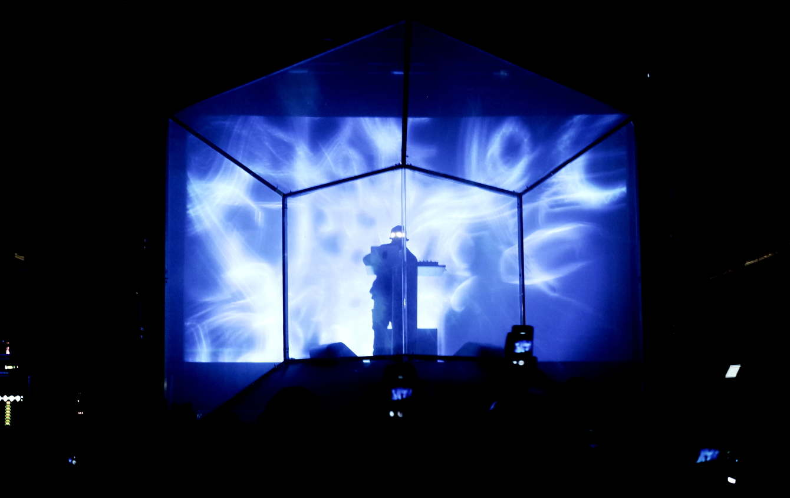
Flying Lotus live with Hypercube
FLAMAGRA
In the 5 years leading up to his most recent album in 2019 a lot has transpired. He made his directorial debut with the film Kuso and executive produced albums for Thundercat and Georgia Anne Muldrow. All this occurred with a shifting political climate, the deaths of his close friends and collaborators Mac Miller and Ras G, and the fires burning near his home in Los Angeles. These experiences birthed the concept for his sixth studio album Flamagra. He explains Flamagra is a made up word that is meant to encapsulate the spirit of fire which causes death and destruction but also its clearing facilitates rebirth.
Flying Lotus (2019)
Flying Lotus' Kuso
Flying Lotus-Flamagra
For the past decade Flying lotuses main instrument has been his laptop but for this album he committed to learning real instruments and is especially fond of the piano. Five years in the making, the jazzy psychedelic concept album spans 27 tracks taking the listener on a journey from destruction to rebirth. He was able to collaborate with many out of the box thinkers including George Clinton, David Lynch, Anderson .Paak, Solange, Tierra Whack, Thundercat, Shabazz Places, Toro Y Moi, and Denzel Curry. He explains these collaborations as an organic way of creating as many of these came from just being in the studio with his friends.
With this new album came an update to his live performance visuals. Still collaborating with friends and visual artists at Strangeloop Studios and Teaching Machine, they were finally able to push past mimicking a three dimensional set up to going full on 3D. At each performance concert goers were given a pair of 3D glasses to be worn during his set.
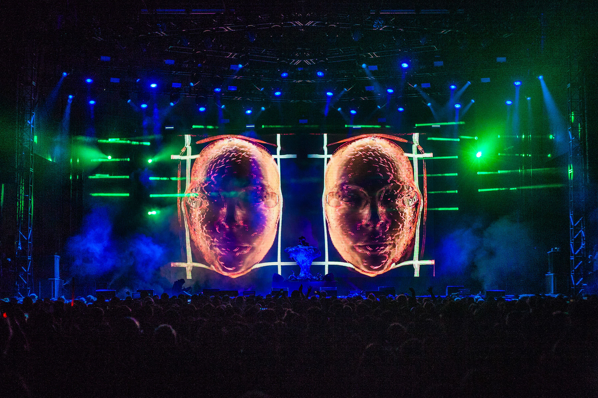
Flying Lotus live in 3D